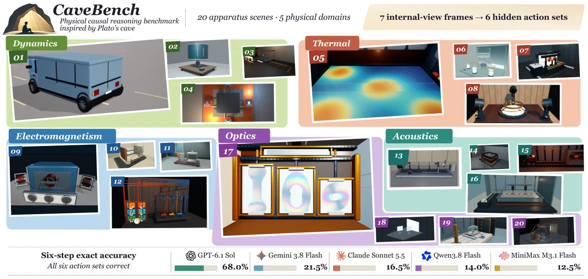
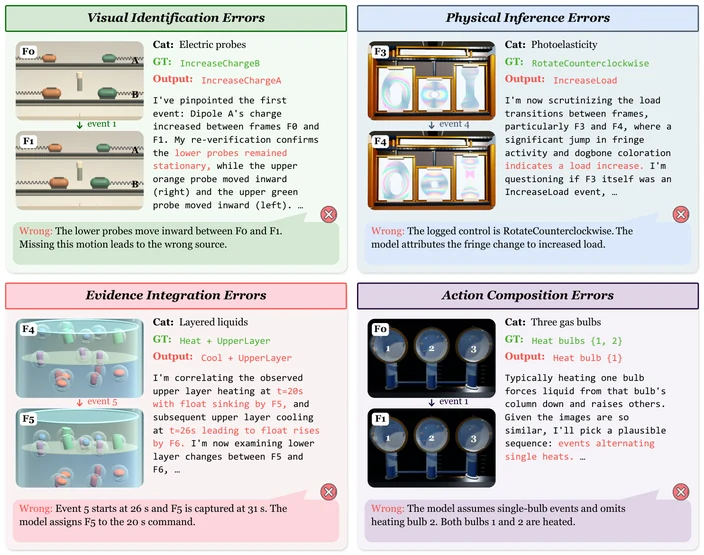

CaveBench: Benchmarking Abductive Physical Reasoning from Internal Observations
Tsinghua University * Equal contribution · † Corresponding author


Dataset
Start with the initial frame, F0. Compare each new frame with the one before it, then use the apparatus description to choose the controls that explain the change. Two controls can act in the same interval.
- Apparatuses
- 20
- Physical domains
- 5
- Test questions
- 1,180
Gold-leaf electroscope
S11 · Electromagnetism
Which frame shows half insertion?
Sliding mica between the capacitor plates brings the gold leaves closer together.Playback unavailable. Open the MP4
The training set contains 9,000 episodes and the validation set contains 1,000. The 200 test episodes yield 1,180 questions about sequences ranging from one to six events.
Test set composition by domain
| Domain | Apparatuses | Episodes | Questions | Single-label events | Two-label events |
|---|---|---|---|---|---|
| Dynamics | S01–S04 | 40 | 240 | 140 | 100 |
| Thermal physics | S05–S08 | 40 | 240 | 68 | 172 |
| Electromagnetism | S09–S12 | 40 | 220 | 203 | 37 |
| Acoustics | S13–S16 | 40 | 240 | 108 | 132 |
| Optics | S17–S20 | 40 | 240 | 179 | 61 |
In the dielectric-response apparatus (S11), the first three events show full insertion, half insertion and withdrawal in varying order. Comparing the three leaf openings lets the viewer identify the middle setting. The ten S11 episodes therefore contribute three- to six-event questions. Each of the other 190 episodes contributes all six question lengths.
Case studies
Download editable slidesBrowse all 20 apparatuses
Construction and evaluation

Physical design and example questions


Leaderboard
A sequence is correct when every event matches its recorded controls in chronological order. Controls applied together may appear in either order.
- Individual events
- 86.25%1,035 of 1,200
- Complete sequences
- 68.0%136 of 200
Detailed tables
Analysis
From one event to six
All 27 model configurations score lower at six events than at one. Gemini 3.8 Flash recovers 115 of 190 single-event sequences (60.5%) and 43 of 200 six-event sequences (21.5%). MiniMax M3.1 Flash drops from 73 of 190 (38.4%) to 25 of 200 (12.5%).
Electromagnetism is MiniMax M3.1 Flash’s strongest domain on six-event questions (27.5%). It is the lowest-scoring domain for GPT-6.1 Sol (57.5%) and Terra (37.5%). Both reach their highest scores in thermal physics, at 80.0% and 85.0% respectively.
Learning to recover a sequence
Qwen3.5-9B recovers one of 200 six-event sequences before task-specific training and 40 after supervised fine-tuning (SFT). Adding SimPO or KTO gives similar single-event accuracy across two seeds (86.8% and 86.3%, respectively). On six-event sequences, SFT + SimPO reaches 31.8% and SFT + KTO reaches 14.5%.
SFT recovers 10 of the 40 six-event dynamics sequences. The two SimPO runs recover 16 and 17. Across the five domains, each SimPO run recovers 27 sequences that SFT missed. The runs agree on 26 of those sequences. Compare the two training seeds.

Reasoning effort
Raising reasoning effort from low to high gives GPT-6.1 Sol 29 more correct final answers on the same 200 six-event questions, from 119 (59.5%) to 148 (74.0%). Gemini 3.8 Flash recovers 15 fewer sequences at high effort, dropping from 31 (15.5%) to 16 (8.0%).

Error analysis
In 100 sampled incorrect six-event answers, models misread a visual cue in 38 cases, failed to connect observations across time in 31, misapplied a physical principle in 24 and selected the wrong combination of controls in seven.

